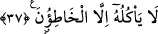

ırmakla imtihan edecek kim ondan yerse (içerse) benden değildir” (el-Bakara,
2/249) âyetinde içeceğin yiyeceklere dâhil olduğunu görüyoruz: Âlimler bu âyette “lem
yet’amhu” ifâdesini “kim ondan tatmazsa” şeklinde tefsir ederek gerek yenilecek gerek
içilecek herşeyin tadına bakmak şeklinde tefsir etmişlerdir.
37. Onu ancak günahkârlar yer.
Bu cümle -dilbilgisi kurallarına göre- yukarda geçen “ğıslîn” kelimesinin sıfatıdır.
Ğıslin’in “ekl/yemek” şeklinde ifâde olunması, âyette “taam/yemek” kelimesinin
zikredilmesi itibariyledir. Buna göre âyetin mânâsı; “Bu ğıslini günahkâr olan
müşriklerden başkaları yemezler” şeklindedir. Nitekim İbn Abbas (r.a.)’dan böyle
rivâyet olunmuştur. Bâzıları, onlarla hakkı bir yana bırakıp bâtıl üzere yürüyenler ve
Allah’ın koymuş olduğu sınırları aşanlar kasdedilmiştir, demişlerdir. “Günahkârlar”
şeklinde tercüme edilen “el-hatıûn” kelimesi, “hatie’r-reculu” kökünden türemedir ki
anlamı; “bilerek hatâ işledi, günaha girdi” demektir. Bu kökten türeyen “hatı’”, doğru
hareket etmeyen ve bunu bile bile kasden yapan, demektir. Aynı kökten türeyen “muhtı’”
ise herhangi bir günahı kasdetmeden işleyen, doğruyu yapmak isterken kasdı olmadan
yanlışı yapan kişi demektir. Nitekim “bir müçtehid hatâ da edebilir, isâbet de edebilir”
dediğimizde “hatâ” kelimesiyle bu son mânâyı kasdetmiş oluruz. Aynu’l-maânî’de ifâde
olunduğuna göre âyetteki “hatıûn” kelimesiyle “tevhid yolunu şaşıranlar” kasdedilmiştir.
et-Tevilatu’n-necmiyye’de bu âyet-i kerîme şöyle tefsir olunuyor: Onlar organlarının
miskinlerini sâlih ameller, sâdık sözler ve saf hâller ile doyurmaya teşvik etmezler.
Onların bugün kendilerine yardım edecek, kendileri ile kaynaşacak candan dostları
yoktur. Çünkü insan ile candan dost olup kaynaşacak olan sâdece amellerdir ve
hâllerdir. O kimsenin kendi zavallı nefsi için çirkin fiillerinin kirinden başka yiyeceği
bir şey yoktur. Bu yiyeceği yiyecek olanlar da; ancak rûhun ve kalbin amellerini bırakıp
aşanlar, nefsin hevâ ve hevesinin peşinde koşanlar, cismânî şehvetlerin ve hayvânî
lezzetlerin ardından gidenlerdir.
[73]. Müslim, Cennet 44; Ahmed b. Hanbel, el-Müsned, II, 328, 334.
[74]. Tirmizi, Cehennem 6; Ahmed b. Hanbel, el-Müsned, II, 197.
[75]. Bk. İhya, IV, 1940.
[76]. Oc; Hz. Âdem zamanında doğup Hz. Mûsa zamanına kadar yaşayan çok uzun
boylu bir adamın ismidir. Üç bin beş yüz sene yaşadığı söylenen bu kişi, Hz. Musâ’nın
asâsından aldığı darbe neticesinde ölmüştür. (Lugatnâme-i Dehhuda)